Cache Engineering for Agents：让 Agent 控制活跃 KV，并让服务端理解操作历史
论文：Cache Engineering for Agents。首版发表于 2026-10-20 17:32 UTC，即北京时间 2026-10-21 01:32；本笔记日期为 2026-10-22。第一作者 Tianyu Fu、共同第一作者 Ruoxi Wang、Zihan Min 均来自清华大学，合作机构包括香港中文大学。作者公开了官方 AKV 实现，本轮已核验入口，未运行复现实验。以下实验数字均为作者报告；服务实现、策略收益和 API 等价成本分开解释。
修改轨迹前缀会使后续缓存状态失效，并触发对保留上下文的昂贵重新预填充；为压低重算成本而保留过少上下文，还会损害任务准确率。
1. 背景和问题
长程 Agent 一轮轮产生推理、调用工具、读取网页或代码，逻辑轨迹越来越长。每一次生成都读取历史 KV，缓存命中虽然避免了重算，却没有消除读显存的带宽成本。与此同时，位置编号持续上升，最终可能超出模型可以可靠处理的范围。因此，成本来源至少包括历史 KV 反复读取、缓存容量占用、历史被改写后的预填充，以及模型继续探索所产生的新输出。只统计输入文本长度，会把这些机制混在一起；只看缓存命中率，也无法发现命中很多但每轮读取过重的问题。
常见控制方法是在上下文达到阈值后，删除旧消息或用摘要替换旧历史，并保留最近若干轮原文。这样做在用户可见文本上很直观，但 Transformer 的每一个历史 KV 都是在当时可见前缀条件下计算的。若前缀已经改动，后面即使文字完全没变，它们应有的隐状态也可能改变，原缓存不再等价于从新文本正常计算的结果。服务系统若坚持通常的前缀缓存正确性，就需要从修改处重新预填充。删得早、保留得多，重算后缀就长；删得狠、保留得少，丢失证据和推理过程的风险又增大。作者把这称为重填充成本与任务准确率之间的两难。
本文不是把某一种注意力重要性算法包装成缓存工具，而是重新定义 Agent 与服务端之间的控制对象。Agent 保留完整逻辑文本，额外声明哪些 KV 以后不再参与注意力、何时重新压紧位置编码。模型继续利用保留下来的历史状态，而不是要求这些状态等价于删掉文本后从头计算。由此可以渐进地滚动移除旧工具结果，不必每次都对未删除的长推理后缀重新计算。这种语义有一个必须接受的特点：保留状态在形成时可能读取过被移除的内容，所以旧信息仍可间接留在保留状态里。这里的删除是未来注意力访问控制，不能解释为从模型记忆中彻底抹去某条事实。
作者先用 GPT-OSS-120B 在前一百个 BrowseComp-Plus 任务上进行动机实验，每题四次尝试、最多一百轮 Agent 行动。若仅保留最近十二轮工具结果而改写文本，成本是完整上下文基线的约一点八五倍；四万八千词元触发摘要，成本降低约百分之七，却下降约五个准确率百分点。直接滚动移除旧工具 KV 则可以同时改善成本和准确率。这个小规模试验用来说明缓存重算确实可能吞掉文本裁剪收益，不能代替后面的三模型四任务正式对照，也不能据此断言所有摘要策略都会失败。
为何优先移除旧工具结果？作者对十条 BCP 请求的注意力统计发现，相同相对位置下，工具结果通常比助手推理获得更少注意力，较旧内容也通常比新内容弱。工具返回往往含有长网页、搜索候选、重复代码或日志，后续推理已经提炼了其中一部分有效信息。因而主策略保留全部推理缓存和最近十二个工具响应，优先移除更旧的工具缓存。这仍是依赖任务分布的经验规律。某个早期工具结果可能包含唯一证据、约束或精确数值，低平均注意力不等于它对最终答案不重要；十条轨迹的统计尤其不能提供逐样本正确性保证。
另一个独立问题是位置。移除一半 KV 不会自动把剩余位置编号变短，原先位于第十万位置的状态仍然带着那个 RoPE 位置编码，下一词元也可能继续使用更大的编号。即使活跃缓存很小，模型依然可能触及位置上限。例如旧工具状态已经逐步移除，但保留下来的推理仍沿原轨迹递增编号，下一次追加不会因缓存数量减少而自行重置。因此，作者设计 repos，显式调整保留键的旋转位置、重置后续编号。缓存数量、逻辑文本长度和编码位置范围从此成为三个可分别变化的量。理解这三者的分离，才能理解为何工具移除与位置调整在消融中不是同一个开关。
对推荐研究而言，本文的直接对象是多轮工具型 Agent，不是排序网络或离线召回算法。它与个性化检索 Agent、商家助手、内容分析和推荐解释工作流有潜在关联：这些应用也会累积长工具输出，并在后续轮次反复读取。若迁移，应先检验旧工具结果中是否存在用户偏好约束和必须逐字保存的证据，再研究消息角色级保留策略。本文没有提供推荐点击率、转化率、排序质量或线上用户实验，不能把 Agent 任务成功率提升转换成这些业务指标的收益。
最后，真正难的部分不是发出一个删除指令，而是在共享缓存服务中维护它的语义。同一段文本、同样的最终保留位置，经过不同删除时序仍可能形成不同 KV。某个请求不再访问一条缓存，也不代表其他共享请求已经用完；显存紧张时缓存被逐出，下一次请求还必须能按原操作历史恢复。作者因此同时提出缓存操作规范与 AKV 服务引擎。只实现策略却沿用普通文本前缀匹配，会存在错误复用风险；只实现服务却没有合适保留策略，也不会自动获得论文报告的成本收益。
作者也把工作与已有低层缓存压缩区分开：量化、低秩表示和聚合主要改变每条缓存的表示大小，注意力分数淘汰主要按词元级信号决定保留对象；AKV强调由消息角色、任务语义与Agent决策驱动高层操作，并用统一引擎维护跨请求复用和恢复。两种方向并非互斥，但论文没有提供与所有量化或压缩方案组合后的完整收益矩阵。并发工作中也存在模型指示删除工具结果、会话内后缀复用等思路，本文重点是把操作历史纳入共享缓存索引，并在缓存实际丢失后仍可重建正确状态。因此评价新颖性应落在操作形式化与服务共设计，不能笼统写成首次发现旧工具结果可以丢弃。
2. 方法
2.1 缓存工程与操作序列
论文第三节从自回归概率和 KV 缓存开始，把逻辑轨迹与活跃缓存明确分开。逻辑轨迹包含提示词、助手消息、工具返回的全部词元，位置下标描述它们在文本历史中的顺序。活跃缓存则仅指后续注意力可以访问的状态，既不等于磁盘或显存实际驻留集合，也不要求数量等于逻辑词元总数。原文式一、式二为：
符号解释：$\theta$ 是模型参数，$x_{1:t}$ 是从第一到当前第 $t$ 个词元的完整逻辑序列，$x_{t+1}$ 是待预测词元，$p_\theta$ 给出候选词元的条件概率。这是未引入缓存操作时通常的文本条件表示，整个前缀定义预测条件。这里没有额外的训练目标或更新规则，模型权重在本文服务推理过程中固定，改变的是缓存访问过程。
符号解释：$C_{1:t-1}$ 表示此前词元形成的键和值，$x_t$ 为本次参与计算的当前词元；缓存将前缀计算结果保留，使生成不必对先前词元逐层重做前向。作者据此引出可控的活跃缓存，后续操作改变可读集合后，预测条件随之变化。这种计算语义没有承诺任意移除后仍与完整历史概率相等，服务应保证与指定操作过程一致。
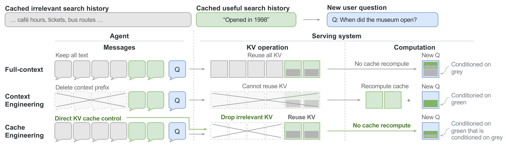
图一按消息、缓存和新查询计算三个层次对照。第一行保留所有文字和所有 KV，新查询直接复用，但持续读取不相关灰色历史。第二行删掉灰色文本，绿色后缀的原缓存也随之失效，因此需要重算绿色状态。第三行保留原文字、排除灰色 KV，继续复用原绿色状态。最右边嵌套色块尤其重要：第三行绿色状态内部仍含形成时吸收的灰色历史影响，和第二行重算得到的纯绿色状态并不一样。这不是图示上的装饰，而是后续服务正确性定义的前提。缓存工程所保证的是忠实执行指定操作轨迹，而不是等价于某一条删改文本的标准全量推理轨迹。它允许间接信息保留，从而避免重算，但也意味着不能把 drop 用作隐私擦除或事实撤销机制。如果旧网页包含错误信息，后续推理已经吸收该错误，移除网页本身并不能保证它不再影响答案。工程评估必须区分减少直接访问、改变模型分布和清理历史污染这三种目的，不能把同一接口当成三者的共同保证。这一选择也改变了结果解释：完整历史和缓存工程生成的回答可以不同，文本裁剪与缓存工程生成的回答也可以不同。服务正确性应先比较同一操作语义在有缓存与恢复后的行为，再做任务质量评估。若拿文本裁剪后从头预填充的输出当作唯一正确答案，就会把作者有意保留的历史条件差异误认为实现误差。追加操作接受一个新词元和当前活跃缓存，计算该词元状态后接到缓存序列尾部，原文式三为：
符号解释：$C$ 为操作前活跃缓存，$C_{t+1}$ 为新词元 $x_{t+1}$ 的状态，方括号内分号表示按逻辑顺序拼接。新增状态取决于当时活跃集合，位置编号默认逐次增加。词元可来自提示、工具或模型生成，追加都遵循同一可见性规则。若此前发生移除，新状态不会再直接读取那些条目，但仍可能读取携带旧历史影响的保留条目。
符号解释：原文式四中的 $P$ 是被指定移除的活跃逻辑下标集合，$C_i$ 是对应缓存条目，集合差符号表示从活跃序列移除指定项，移除后保留项顺序不变、内容不变、位置编码不变，下一次追加的位置编号也不变。drop 改变后续注意力的可见集合，不重算已经保留的状态。
符号解释：原文式五中 $K$ 为键，$p$ 和 $q$ 分别是原位置与目标位置，$R$ 为该位置的旋转矩阵，负一次幂表示逆矩阵。键经旧旋转逆变换再施加目标旋转，移到新位置。旋转矩阵由 RoPE 定义，值向量不变。若保留若干项，repos 按逻辑顺序将它们重编号为从零开始的连续位置，下一词元紧随其后。它不重新推导保留隐状态，也无法把不同形成历史的状态变成相同状态。
符号解释：原文式六中 $m$ 是操作总数，$o_j$ 是第 $j$ 次操作，$x$ 为追加词元，$P$ 是移除下标集合。操作序列中每一步明确记录追加、移除或调整位置。固定模型与配置后，从空缓存按序执行可以确定当前状态；只给最终文本和保留集合则不够。本文不是训练损失论文，没有额外的可学习删除器或反向传播目标；这些操作在推理期间由 harness 或 Agent 决策，模型主干沿正常前向路径运行。
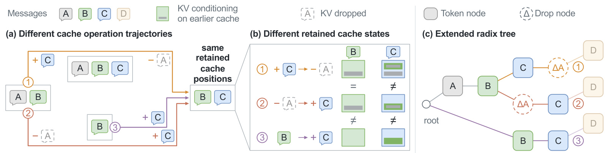
图五给出最小反例。第一条轨迹先有甲乙，再追加丙，最后移除甲；第二条轨迹先有甲乙，先移除甲再追加丙；第三条轨迹从乙开始直接追加丙。三条路径最后都能看到乙丙，但只有前两条的乙形成于甲存在时，所以二者的乙相同、第三条不同。丙的差异更大：第一条直接读取甲和乙；第二条不直接读取甲，却读取携带甲影响的乙；第三条只读取从无甲历史形成的乙。这说明终态保留下标、词元文字、甚至“当前没有甲”都不足以决定丙的数值。右侧扩展树在正确时点插入移除节点，将追加丙之前和之后的删除区分开，仍共享真正相同的甲乙前缀。这种表示在共享率与正确性之间建立精确边界：相同操作发生前可以共用，发生差异后的状态必须分支。若实现把操作记录统一挪到请求尾部，或只按最终掩码做键，就会把第一、第二条混淆。此错误不一定造成崩溃，却可能悄悄改变输出分布，因而必须通过构造交错操作轨迹检查，而不能仅测端到端速度。从恢复角度看，第二条轨迹丢掉甲的物理页也不意味着甲从重建依赖中消失：乙原先是在甲存在时计算，若乙也丢失，就仍需恢复它的形成历史。扩展树的空节点因此必须保留操作路径信息。只保存终态乙丙而删除甲对应的所有逻辑记录，会破坏下一次完整恢复的可定义性。这个依赖与日常的无效缓存回收不同，系统要同时追踪当前访问和恢复所需历史，才能既安全释放显存又不丢掉重建依据。
2.2 无状态服务接口
原文第四点一节采用“无状态接口、有状态服务”。每次请求仍包含完整 messages，额外的 cache 字段描述移除和位置调整的完整历史。消息天然提供追加操作；drop 的键是在哪条消息之后触发，值是移除哪些消息的缓存；reposition 列出在哪些消息之后执行调整。索引从零开始，同一边界同时出现时先移除再调整。客户端每轮扩展消息与操作记录即可，不需要保存服务端当前在哪张卡保有哪条 KV。接口输入的完整性是恢复能力的前提。若只传“这次再删一条”却丢掉过去的操作，服务器一旦逐出旧状态，就不能仅据文本重建之前每个词元应当看见的缓存。另一方面，请求范围的语义必须与物理池隔离：一个请求 drop 共享前缀，另一个请求仍可以合法继续使用原缓存，输出分布不能被邻居请求改变。这个原则也解释了为什么 drop 不应该直接变成对公共 KV 页的无条件释放。本文接口兼容常见 API 的消息组织习惯，但需要服务端支持新的字段与操作解释，不能把它理解成向任意商业文本 API 增加字段就能生效。
2.3 感知移除与位置版本的缓存管理
扩展 radix tree 把词元和操作共同放进路径。移除节点记录发生点和逻辑下标；物理页面即使逐出，树节点仍可作为空占位保留下来，避免其下方仍有用的后代失去索引。缓存只有在没有正在执行的计算或恢复需要它时才可逐出。对可逐出项，系统优先回收已经被移除的版本，再考虑完成请求留下的缓存，因为后者可能在下轮继续命中。这套规则让“对某请求不可见”和“对全局已经无用”成为两种状态。
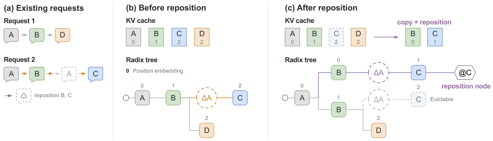
图八从两个共享甲乙的请求出发。第二个请求在追加丙之前移除甲，之后将乙丙从位置一、二调整到零、一。服务不能原地改写仍被第一个请求使用的乙，所以要复制并旋转出第二套位置版本。图中保留下来的旧乙仍然供第一个请求继续生成丁，旧丙在无人需要时才变成可逐出；新树支路则用新的位置标签和调整节点标识第二个请求的状态。这里既有内容共享，也有表示版本分离：位置改变通常不要求重新计算隐状态，但某个词元形成时所见的相对位置改变，确实会改变它的隐状态，二者不能混为一谈。附录举例说明，若先重排位置再生成丁，与先生成丁再重排最终位置，丁即使最后落到同一编号，形成时看到的距离仍不同。服务必须保留调整操作的发生点，不能仅检查最终位置标签。因而图中的新支路不是简单的“把下标减一”，而是在不污染其他请求的条件下管理共享状态的多个旋转表示；复制、旋转、占用和回收都会带来实际开销，需要在高并发与频繁调整时测量。状态版本管理还意味着不能用词元与目标位置组成一个无历史的全局字典。两个请求最终拥有相同编号，仍可能因为调整发生在新词元生成之前或之后而不兼容。树中显式操作节点承担了这部分身份信息，物理页面的位置标签只解决表示如何旋转，无法单独表达整个计算条件。附录进一步区分精确匹配与可旋转复用匹配。精确匹配要求词元和当前位置都相同，并要求全部操作节点与参数一致：
符号解释：$T$ 为树中词元节点，$x$ 为词元标识，$p$ 为存储键的编码位置，带撇号者为候选节点。非精确复用只允许忽略存储位置标签，不能忽略操作记录：
符号解释：$\phi$ 为去除存储位置的投影，$\Delta_P$ 为移除指定集合的操作节点，$R$ 在此表示调整操作节点；这里投影把词元节点位置去掉，移除节点和调整节点原样保留；投影前缀完全相同才具有历史兼容性。系统先取最长有效精确前缀，只有兼容分支更长时才替换；同长度保留精确命中，以免增加不必要的复制旋转。
符号解释：$s$ 和 $t$ 分别表示来源版本与目标版本，$K$、$V$ 为键和值，$p_s$、$p_t$ 为两个版本位置。该式是附录的来源版本到目标版本变换，值共享相同内容、键换旋转表示。正确性论证要求固定模型、位置配置和精确算术下形成历史相同；实际有限精度旋转可能引入舍入误差，原文没有承诺与重算逐比特一致。可变换的是相同形成历史的不同位置表示，不能跨过已经不同的计算历史复用。
2.4 分段批量注意力恢复
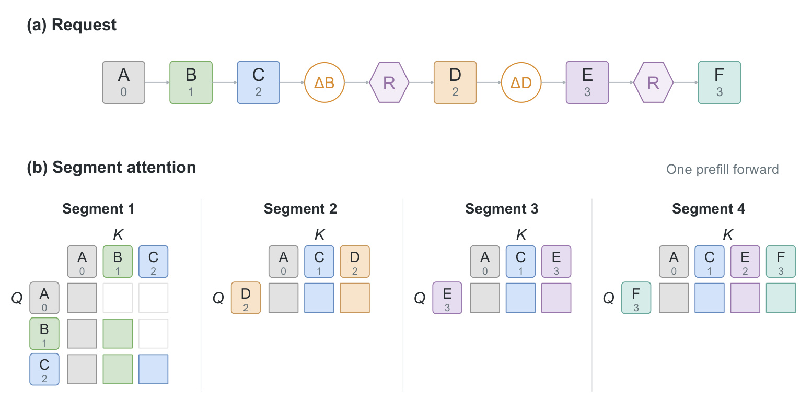
图十展示如何把一个复杂恢复合成单次预填充前向。第一段按通常因果关系计算甲零、乙一、丙二；移除乙并调整位置后，第二段的丁二只能看到甲零、丙一和自身。随后移除丁但不调整位置，第三段计算戊三，因此它仍处于位置三，尽管可见缓存只有甲和丙。再做一次位置调整，第四段的己三读取甲零、丙一、戊二与自身。这个例子同时说明，最终活跃集合不能直接用于整条历史恢复：早期丙最初必须看到乙，哪怕乙后来已被移除；后期戊则不能看到已移除的丁。原文在每一层给不同查询段构造各自的历史页列表和位置版本，必要时旋转键、复制值，然后批量提交注意力。分段只发生在注意力可见性和位置版本层面，前馈网络仍对整序列做一个批次，减少在每个操作边界重复前向与重复读取前馈权重的代价。“单次”因此是一次模型前向，不是无须中间状态，也不是一次普通三角因果掩码就能重建全部历史。实现还必须防止正在恢复某段时提前回收其旧位置版本，否则下一段看似成功、早期段却已使用错误输入。
恢复的输入是完整逻辑消息、操作序列和可复用的部分 KV，输出是与这些操作相符的缺失状态。它解决显存压力下跨请求可靠性，而不是额外压缩信息内容。对多次 repos 的轨迹，同一层可能需要多个临时位置表示；这些表示不必重复算隐状态，但仍需管理页表、旋转计算和内存生命周期。因此，服务收益取决于避免重算节省的量能否覆盖版本管理成本。论文在带前缀缓存和预填充/解码分离的系统中评估，后续移植到不同页大小、调度器或混合注意力模型时，应重新验证这一成本平衡与恢复正确性。
3. 实验结果
3.1 三模型、四类 Agent 任务的主比较
正式对照包含 MiniMax-M2.7、GPT-OSS-120B 和 MiroThinker-1.7-Mini；前者与后者采用思考模式，GPT-OSS 采用高推理强度。任务包括检索研究 BCP、网页深搜 xbench-DeepSearch-2510、GAIA 的一百零三个纯文本验证任务，以及软件修复 SWE-bench Verified。三个问答任务均由 GLM-5.2 依照对应官方提示判分，软件修复使用官方测试脚本，不使用大模型裁判。工具轮数上限依次为一百、百轮、二百轮与二百五十轮。BCP 使用固定文档语料，Qwen3-Embedding-8B 做检索，还允许读取完整文档；网页任务的信息抽取依赖 GLM-5.2。这些外部环节构成任务环境，不能与无网页工具或不同检索器的成绩直接比较。
Standard 在前两模型达到九万六千词元、MiroThinker 达到十九万二千时做摘要；Text Engineering 对全部模型统一四万八千触发，摘要规则相同。AKV 保留最近十二个工具响应与全部推理，repos 阈值与 Standard 一致。摘要采用 Pi 的提示、序列化和切点选择，预留一万六千三百八十四词元、近期保留预算两万，空摘要被拒绝且失败不重试。因此对比的是具体阈值策略和对应实现，不是穷尽所有文本压缩方法后的最优前沿。
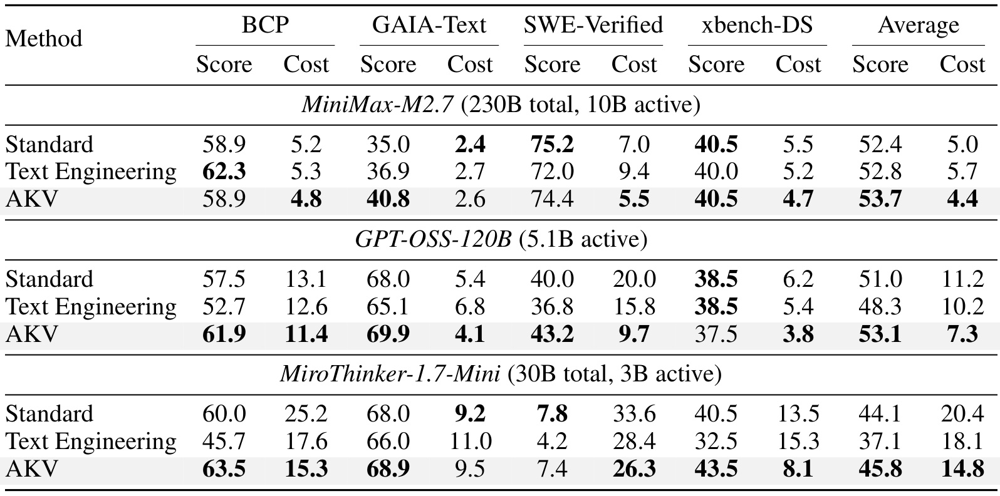
表一的每一任务同时列成功率和成本，不能只读最后平均列。MiniMax 的平均成功率从 Standard 的百分之五十二点四到 AKV 的五十三点七，成本从五点零到四点四美分；但软件任务七十五点二降到七十四点四，GAIA 成本二点四升到二点六。GPT-OSS 的平均成功率五十一点零到五十三点一，成本十一点二到七点三；软件任务成本二十点零到九点七，成功率四十点零到四十三点二，是一个较强的联合改善例子。但它在深搜上三十八点五到三十七点五，仍有一个百分点下降。MiroThinker 平均四十四点一到四十五点八、成本二十点四到十四点八，软件任务成功率七点八到七点四，并未获得统一提升。也就是说，论文的“平均更好”包含具体任务退化，不能写成三模型四任务全面超过基线。相对低阈值摘要，三个模型的平均分差分别零点九、四点八、八点七个百分点，差异相当大，说明原模型能力和摘要造成的损失都影响最终收益。作者跨模型跨任务汇总为平均约一点七个百分点提升、成本下降百分之二十七点七；显示表格已四舍五入，读者不应拿平均列粗略再算的比率替换作者按细粒度数据汇总的口径。
附录的 GPT-OSS-20B 则提供能力边界：Standard 平均百分之四十四点零、六点二美分；低阈值摘要三十八点二、四点六；AKV 四十五点二、四点八。AKV 比 Standard 更准且便宜，却比低阈值摘要更贵。BCP 五十点五对四十九点零、软件四十四点二对四十一点八，GAIA 六十二点一低于摘要的六十五点一，深搜二十四点零低于 Standard 的二十五点零。这支持方法可以用于同家族小模型，但不支持“小模型同样全方位获益”。作者将收益差异归于小模型利用保留信息能力有限，这是一种解释，尚不是有独立干预证明的因果结论。
3.2 长轨迹分桶与信息保留
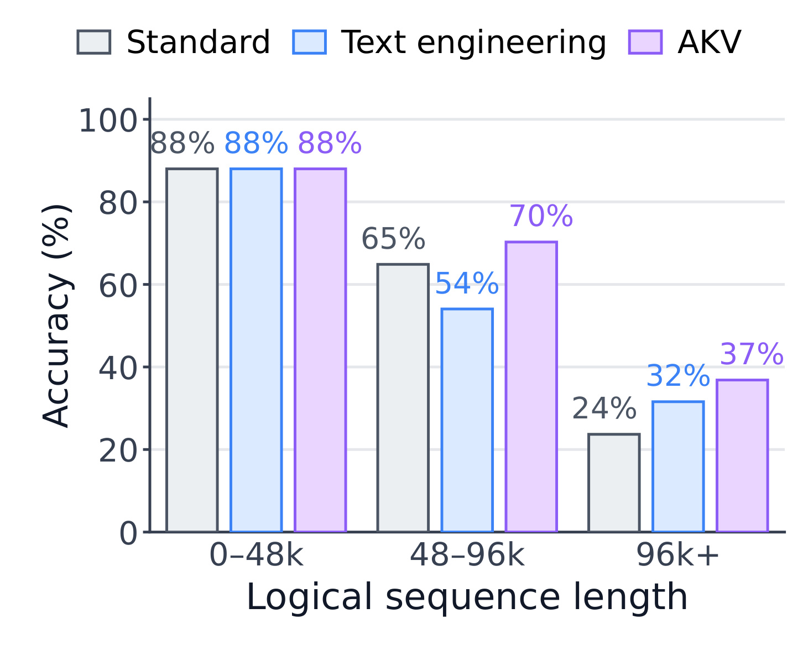
图七使用 GPT-OSS-120B 的一百题 BCP 观察轨迹长度。四万八千词元以下三者都是百分之八十八；四万八千到九万六千区间，Standard、低阈值摘要、AKV 依次约百分之六十五、五十四、七十；超过九万六千，依次二十四、三十二、三十七。下降时点和两种摘要阈值相符，为“突然压缩旧历史会丢信息，渐进移除工具缓存可能更稳”提供了支持。不过，逻辑长度是一次实际执行之后产生的变量，困难任务与更长探索都可能进入较长分桶，策略也可能改变总轮数。这个图并非把同一题随机固定为三种长度的严格因果实验；不能把最长桶的差距完全归因于某一个 KV 操作。更稳妥的判断是，在作者运行的长轨迹任务中，缓存工程维持了较好的最终成功率，且其优势主要在压缩真正发生的区间显现。前一个区间三者相同，也提示它并非对所有短请求都有质量增益。
附录的活跃长度曲线显示，工具响应超过保留轮数后，AKV 持续滚动移除旧工具 KV，因此活跃上下文增长变慢。但全部推理仍保留，活跃缓存不会自动固定在十二轮文本的大小，repos 也只是压紧位置范围，不能消除持续累积的推理缓存。因此“支持长轨迹”应解释为推迟容量与位置瓶颈、允许更高效探索，而非无限窗口或常数内存保证。若工具返回本来短、推理特别长，这一策略的收益可能明显小于网页长返回任务。
3.3 服务吞吐、尾延迟与成本来源
服务性能运行于 SGLang v0.5.20，八张八十 GB A800，预填充和解码各四卡，均采用四路张量并行。模型权重为 BF16，因为硬件没有原生 MXFP4 支持。KV 传输用 Mooncake 与机内 NVLink，Triton 注意力及 MoE 后端，静态显存比例零点八五、每页一词元，分块和最大预填充均为八千一百九十二词元；两类 worker 都开 radix 缓存，基线使用 LRU，AKV 感知已移除缓存。硬件、量化和页面粒度都与实际部署可能不同，尤其一词元一页让逻辑操作精度高，但不能无成本推广到其他页大小。
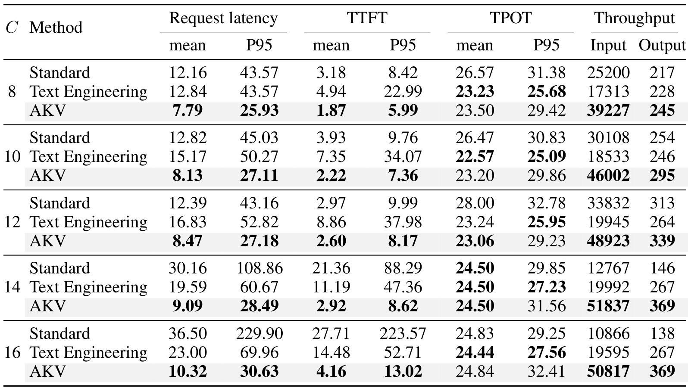
表二选 SWE-bench Verified 中不做摘要时上下文峰值最大的八十题，使用同一任务与固定打乱顺序。每种方法回放自己策略采集的轨迹，所以轮数和输出预算允许不同。输出预算由记录重建，温度为零、忽略结束符生成定额长度；新生成的助手响应继续进入历史，但工具结果使用原记录而不重新执行。这是控制下的服务负载测量，不等于完整工具在线运行。并发八时 AKV 请求均值七点七九秒、P95 二十五点九三秒，对 Standard 的十二点一六与四十三点五七；输出吞吐二百四十五对二百一十七词元每秒。并发十二时，AKV 输出三百三十九对三百一十三，P95 二十七点一八对四十三点一六。作者宣传的峰值比较采用 AKV 并发十四与 Standard 并发十二：输出三百六十九对三百一十三，即一点一八倍；P95 二十八点四九对四十三点一六，即基线除以新方法约一点五一倍，均值则约一点三六倍。这不是同并发比较。输入吞吐五万一千八百三十七对三万三千八百三十二，包含已被 drop 的逻辑输入词元，不能解释成全部实际重新计算过的词元。高并发下 Standard 容量压力触发反复预填充，十四和十六并发仅报告一小时截断窗口，仍有未完成请求；AKV 对应窗口也有特殊截断规则。因而极高并发的巨大尾延迟差距必须连同窗口选择一起读，不宜抽成普遍服务承诺。
同一并发下的比较与各自峰值下的比较回答不同问题：前者描述相同客户压力时的性能，后者描述各系统最适负载下的容量。选择部署点时应保留两者，尤其不能把峰值吞吐与另一并发的最低延迟拼成不存在的单一配置。
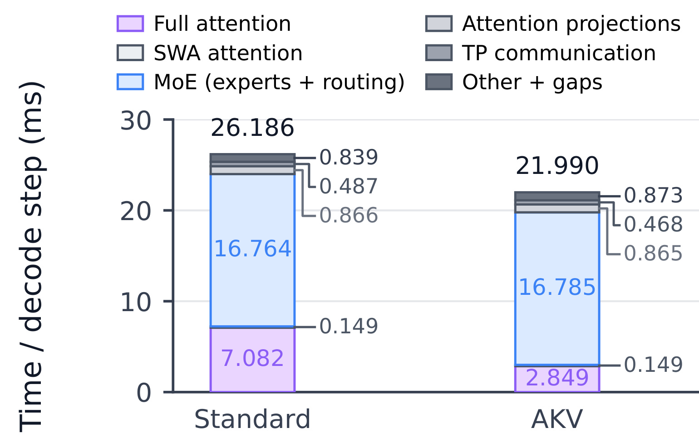
图十二帮助回答服务收益到底来自哪里。相同批量下，总解码步骤从二十六点一八六毫秒降到二十一点九九零，约下降百分之十六；完整注意力从七点零八二到二点八四九毫秒，下降百分之五十九点八。MoE 专家与路由大约十六点七六四和十六点七八五，几乎没有改变，滑窗注意力也仍约零点一四九。因而活跃 KV 缩短直接减少了全注意力读取和计算，而没有让所有网络算子同步加速。完整注意力节约约四点二毫秒，映射到整个步骤时收益被较大的专家计算部分稀释，这与硬件瓶颈分析一致。该结果还能解释为何 TPOT 改善幅度不一定等于请求 P95 改善：端到端延迟还包括排队、预填充、恢复和输出长度。论文表二中低阈值摘要某些 TPOT 更好，但首词延迟很差，就是主动上下文更短同时重算更重的表现。对于全注意力占比不同的模型、批量或后端，应先做组件分解再估计收益，不能直接套用百分之五十九点八作为整体加速幅度。
图中专家部分几乎不变还提供了一个成本诊断信号：若新的模型结构让前馈或专家计算占据更高比例，继续缩短缓存的边际加速会减弱。反过来，长历史、大带宽压力的批量可能更受益，但并发增大又可能改变排队和恢复频率。必须用同批量算子时间与端到端请求统计共同检查瓶颈迁移，不能仅凭单个注意力内核快了多少决定生产容量。这里没有报告所有硬件规模的强扩展曲线，所以跨节点通信是否成为新主导项仍需实测。
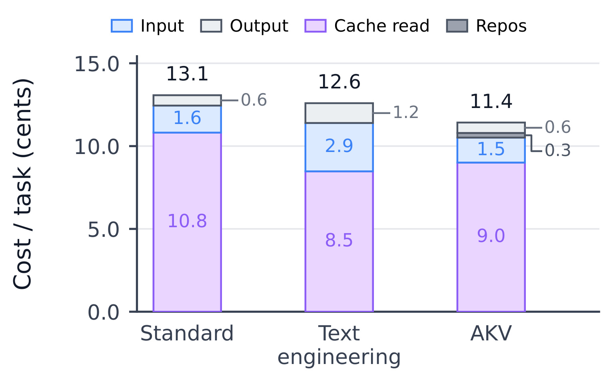
图十三比较 GPT-OSS-120B 的 BCP 每题成本：Standard 十三点一、Text Engineering 十二点六、AKV 十一点四美分。缓存读取依次十点八、八点五、九点零；输入依次一点六、二点九、一点五；输出零点六、一点二、零点六，AKV 另有约零点三的位置调整计费。AKV 并非缓存读费最低，低阈值摘要读得更少，却因为改写历史带来更多输入重填充和额外摘要输出，使总成本更高。相对 Standard，AKV 缓存读费约降百分之十七；相对 Text Engineering，缓存未命中输入成本约降百分之四十八。这里是按固定单价做的 API 等价核算，不是八卡机器真实购置、电费或服务商实际账单。作者只计主 Agent 生成与其摘要调用，未把检索器、网页抽取器和答案裁判全部算成统一系统费用；repos 还保守按缓存命中词元价格收费。若一个应用外部工具成本占主导，模型端降费占总预算的比例会变小。若服务定价不区分命中和未命中，结果也会改变。因此成本、显存、延迟和任务成功率应该作为独立指标保存，避免用一个金额结论代替全部部署收益。
图中金额由分项四舍五入，分项之和与显示总价可能存在很小差别；这不影响机制判断，却提醒复现应保存原始词元计数再统一汇总。更关键的是不同策略会改变输出和工具轮数，不能把所有成本差额都归为同样数量请求下的缓存读写减少。
为便于复算，附录单价单位为每百万词元美元，按未命中、命中、输出顺序，MiniMax 为零点三、零点零六、一点二，GPT-OSS-120B 为零点一五、零点零七五、零点六，MiroThinker 采用基础模型 Qwen3-30B-A3B 的零点二、零点零四、二点四，GPT-OSS-20B 为零点零七五、零点零三七五、零点三。所有方法在同模型内统一价格；这些是论文实验核算价，不是对本笔记日期市场报价的核验。
3.4 删除对象与位置调整的消融
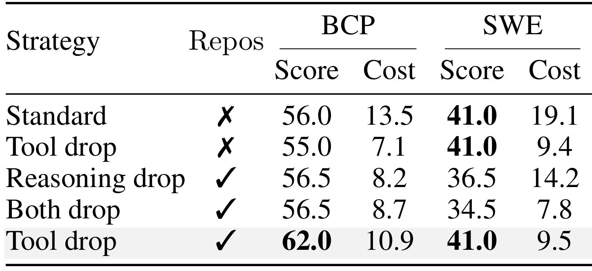
表三使用 GPT-OSS-120B 在 BCP 与 SWE 各自前一百题，因而不能和表一全体成绩直接相减。BCP 的 Standard 为百分之五十六、十三点五美分；仅删工具而不 repos，变为五十五、七点一；加 repos 后为六十二、十点九。后者准确率提高七个百分点同时更贵，作者解释为能够越过原位置限制继续探索，所以不能把“更多操作”机械理解为“更低费用”。软件任务上这两个工具移除配置都是百分之四十一，成本九点四与九点五，相比 Standard 十九点一便宜很多。删推理缓存加 repos 的软件成功率降到三十六点五，同时删推理和工具降到三十四点五，尽管后者成本七点八最低。这说明助手推理承载的信息不能轻率当作可替代冗余；平均注意力与语义角色的差异，在端到端任务中有可见后果。BCP 两种删推理配置都是五十六点五，也低于工具移除加 repos 的六十二。这个消融支持默认保留推理的设计，但没有覆盖所有预算和任务特化策略；尤其不能推出推理永远不可删。对于必须长期精确保存的系统指令或用户约束，主策略也没有提供按错误敏感度自动保护的独立证明，迁移时应另外设定不可移除区域。
还需注意，表三没有给出每个删除对象在全部不同保留预算下的完整网格，因此无法判断更细粒度推理保护是否可以达到工具移除的效果。它建立的是一个清晰实用的默认选择，而不是对语义重要性的最终排序。对于软件任务，推理记录可能包含定位路径、已排除假设和补丁决策，删掉这些状态即使节约访问，也可能让后续循环重复尝试或遗忘已完成检查，这与成本下降但成功率下降的方向相符。
3.5 策略搜索与 Agent 主动管理
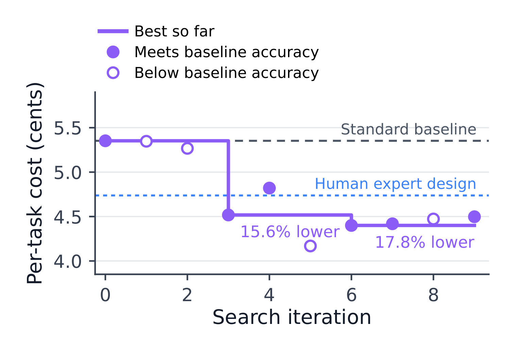
图四用 MiniMax-M2.7 在二十个 BCP 任务上递归改进策略，再以一百个留出任务评价。横轴是搜索迭代，纵轴是每题美分；实心点满足 Standard 准确率条件，空心点没有满足，紫色曲线只跟踪当前满足条件的最好成本。第三与第六轮相对 Standard 分别低百分之十五点六和十七点八。最低空心点并未成为可接受最优解，说明作者并非只追求删得最狠或费用最低，而把任务能力作为筛选约束。摘要称相对专家策略再低百分之七点一，分母与图中的 Standard 不同，不能把两个百分比相加。它展示的是操作接口可被自动程序搜索利用，而非证明搜索可以无限自我提升。二十题策略开发集仍较小，留出分布也属于同一 BCP 家族；未报告跨任务迁移或把搜索过程全部耗费摊入长期成本后的回本曲线。因此实际使用要同时记录优化预算、验证分布和策略版本，否则一次昂贵搜索带来的小幅单题节省可能要很长时间才能摊平。
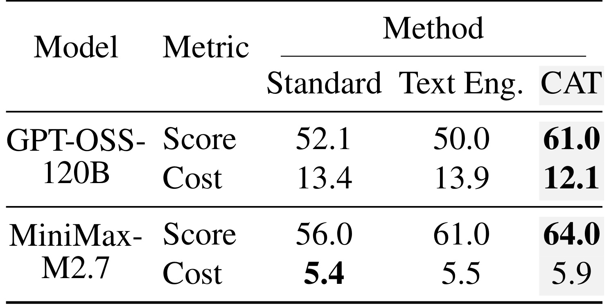
表四保留作者原标签 CAT，即 Cache-As-Tool；它是把缓存控制作为工具提供给 Agent 的另一种策略实验，不能把该列直接改名为默认十二轮 AKV。GPT-OSS-120B 在这一百题 BCP 子集上的成功率从 Standard 的五十二点一和 Text Engineering 的五十点零，升到 CAT 的六十一点零，成本十三点四与十三点九对十二点一美分。MiniMax 则从五十六点零、六十一点零升到六十四点零，但成本从五点四、五点五升到五点九。作者说明后者执行更多轮，所以更高质量伴随更高支出。这是很有价值的反例：把控制权交给 Agent 可以改善成功率，却不会自动保证更低成本，预算约束与目标设计仍然需要独立定义。表四子集中的 Standard 值与表一不同，正因为实验样本和策略设置不同，不能拼接成“CAT 比全量 AKV 高多少”的结论。若计划用主动缓存工具做个性化研究助手，还应检查模型是否理解消息依赖，能否保护需要逐字引用的旧证据，以及工具调用本身会不会产生新的推理与输出负担。本文仅验证两模型这一子集，不等于已经解决可靠自主记忆管理。
4. 总结
AKV 的主要贡献在于把长轨迹缓存从服务端隐含优化变成可描述、可恢复的 Agent 控制接口。逻辑文本保持完整，drop 逐步减少未来可见 KV，repos 独立处理位置范围；扩展树把操作时序作为缓存状态身份，分段批量注意力在逐出后恢复该身份。这个组合解释了为何它既可能减少频繁重填充，又不要求 Agent 手工管理 GPU 驻留状态。主实验给出三模型平均质量与 API 等价成本联合改善，服务实验则进一步说明减少全注意力读取可以转化为吞吐和尾延迟收益。每一层结论都有不同实验支撑，不宜用某一层的数字替代其他层。
至少有五个局限需要保留。第一，移除旧工具缓存仍可能丢掉唯一事实，保留状态又可能间接携带被移除信息，因此它既没有精确事实保留保证，也不是可验证遗忘机制。第二，历史兼容复用的正确性依赖模型和位置配置固定、操作记录完整，有限精度旋转不保证逐比特一致；跨租户共享时还必须独立检查隔离。第三，主策略保留全部推理，活跃缓存仍会增长，不能声称常数内存或无限轨迹。第四，服务在特定硬件、BF16、单词元页和长上下文 Top-80 工作负载上测量，较短请求、大页面和其他量化精度下的收益需要重测。第五，问答裁判、固定检索环境、小规模策略搜索及任务子集都限制外推，特别是原文将线性注意力支持、训练适应这种缓存机制的 Agent 和更强策略列为未来工作。
后续可以沿三条可检验路线推进。首先做正确性压力测试：构造相同最终文本、不同 drop/repos 时序的请求，在命中、逐出、恢复和共享干扰条件下比较输出分布，确认系统没有把历史身份误合并；同时测多次旋转累积误差。其次做预算与风险分层：分别统计工具返回长度、推理长度、旧证据回访率和严格引用任务，评估固定十二轮、按证据类型保护与 Agent 主动工具的差异，质量指标必须包含长距离事实一致性。再次做部署成本实验：固定任务、硬件和并发，分别保存真实读取词元、逻辑输入词元、输出吞吐、首词延迟、请求 P95、恢复次数与显存峰值，并在自己的定价下重算费用，不能仅照搬论文的汇总降幅。
此外，本文的准确率增益更适合解释为给定预算下保留了不同信息和探索机会，而非模型本身获得更强参数能力。正式复现应固定模型版本、工具返回和裁判提示，同时报告成功率波动与失败类型；对那些质量更高但花费也升高的配置，应展示完整质量成本前沿，让选择依据来自自己的任务效用。
对推荐工作流的可迁移部分是“把长工具结果与持续推理分开管理”，例如多轮内容检索、用户需求澄清和证据型推荐解释。可先用影子流量评估过时搜索结果是否可以滚动屏蔽，同时显式保护当前用户约束和来源证据。但用户偏好会随时间变化，过时信息可能已经写入保留状态，单纯 drop 不足以完成偏好纠正；这种场景可能仍需重算、摘要更新或其他记忆机制。本文没有推荐在线实验，迁移价值目前属于有机制依据的工程假设。应把正式离线复现和业务验证作为下一步，而不是把 Agent 基准分数直接写成预期业务收益。